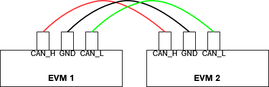
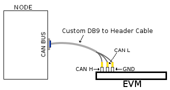
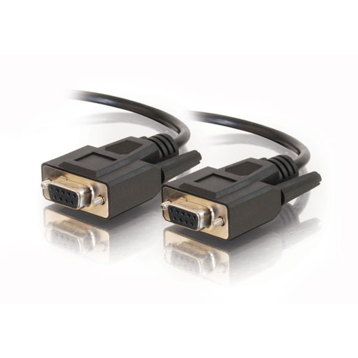
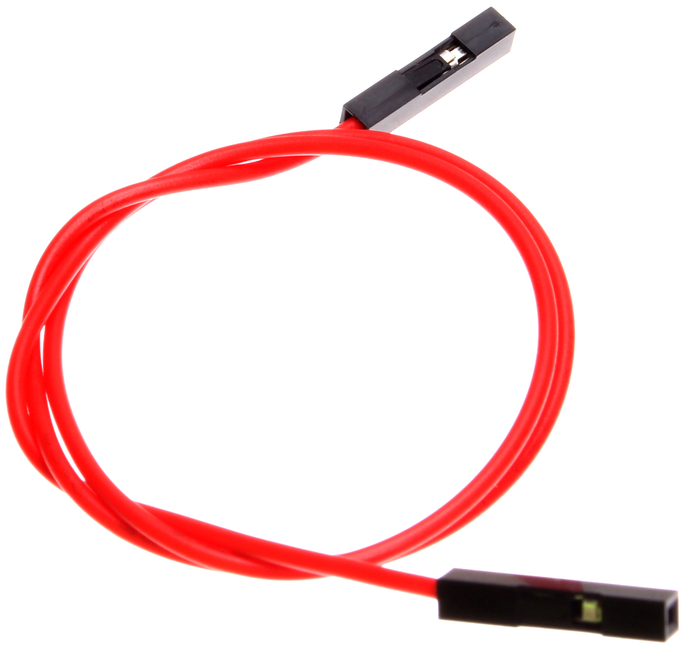
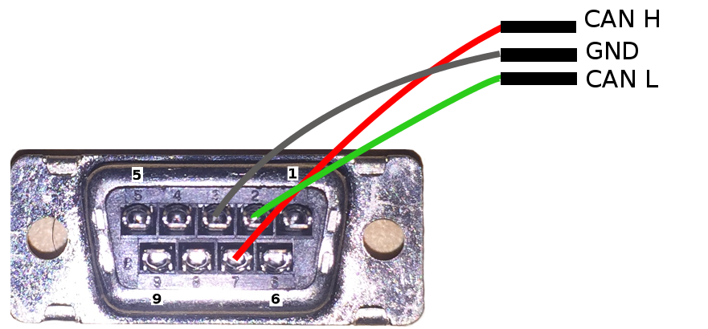
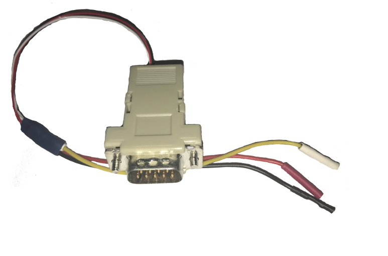

3.2.2.5. MCAN¶
Introduction
The Controller Area Network is a serial communications protocol which efficiently supports distributed real-time control with a high level of security. The MCAN module supports bitrates up to 5 Mbit/s and is compliant to the ISO 11898-1:2015. The core IP within M_CAN is provided by Bosch.
This wiki page provides usage information of M_CAN Linux driver.
Setup Details
TI board List
| SoC | Board | Number of Instances | Connection Type | Enabled by default |
|---|---|---|---|---|
| Dra76x | EVM | 1 | Header | Yes |
| AM654x | IDK | 2 | DB9 | Yes |
| AM64x | EVM | 2 | Header | Yes |
| J721E | EVM | 4 | Header | Yes |
| J721S2 | EVM | 5 | Header | Yes |
| AM62x | SK | 3 | Header | No |
Table: Boards M_CAN Driver is Validated on
Connection Configuration

|

|
| Header to Header | Header to DB9 |
Table: Various DCAN EVM Connection Configuration
Equipment
Female DB9 Cable
For boards exposing M_CAN using male DB9 connectors, a female connector is required. The other side can be male or female depending on the other CAN device the user connects to.
{kind=link}
Jumper Wires
For boards where the CAN pins are broken out via a header, female jumper cables will be ideal for connection. The CAN pins will be CAN H (typically pin 1 of the header), GND (middle pin of the header) and CAN L (lowest pin on the header). The pinout in the header might vary across different boards and users must consult the board’s schematic to verify this.
{kind=link}
Custom DB9 to Header Cable
Typically CAN devices use a DB9 connection therefore for boards whose CAN pins are broken out via a header it is helpful to create a header to DB9 connector cable. This custom cable is simple to make. Either a male or female DB9 connector (not cable) must be obtained along with three female jumper wires.
Snip one end of each of the jumper wires and expose some of the wiring. Now solder each of the exposed wires to pin 7 (CAN H), pin 2 (CAN L) and pin 3 (GND). Make sure your soldering on the side of the DB9 that has the metal lip meant to push some of the exposed wire into and soldering to the correct pins correctly. Use the below diagram as a reference.

|

|
| Wiring Diagram | Example of completed cable. |
CAN Utilities
There may be other userspace applications that can be used to interact with the CAN bus but the SDK supports using Canutils which is already included in the sdk filesystem.
Note
These instructions are for can0 (first and perhaps only CAN instance enabled). If the board has multiple CAN instances enabled then they can be referenced by incrementing the CAN instance number. For example 2 CAN instances will have can0 and can1.
Quick Steps
Initialize CAN Bus
- Set bitrate
$ ip link set can0 type can bitrate 1000000
- CAN-FD mode
$ ip link set can0 type can bitrate 1000000 fd on
- CAN-FD mode with bitrate switching
$ ip link set can0 type can bitrate 1000000 dbitrate 4000000 fd on
Start CAN Bus
- Device bring up
Bring up the device using the command:
$ ip link set can0 up
Transfer Packets
Cansend
Used to generate a specific can frame. The syntax for cansend is as follows:
<can_id>#{R|data} for CAN 2.0 frames
<can_id>##<flags>{data} for CAN FD frames
Some examples:
- Send CAN 2.0 frame
$ cansend can0 123#DEADBEEF
- Send CAN FD frame
$ cansend can0 113##2AAAAAAAA
- Send CAN FD frame with BRS
$ cansend can0 143##1AAAAAAAAA
Cangen
Used to generate frames at equal intervals. The syntax for cangen is as follows:
cangen [options] <CAN interface>
Some examples:
- Full load test with polling, 10 ms timeout
$ cangen can0 -g 0 -p 10 -x
b. fixed CAN ID and length, inc. data, canfd frames with bitrate switching
$ cangen vcan0 -g 4 -I 42A -L 1 -D i -v -v -f -b
Candump
Candump is used to display received frames.
candump [options] <CAN interface>
Example:
$ candump can0
Note: Use Ctrl-C to terminate candump
Further options for all canutils commands are available at https://git.pengutronix.de/cgit/tools/canutils
Stop CAN Bus
Stop the can bus by:
$ ip link set can0 down